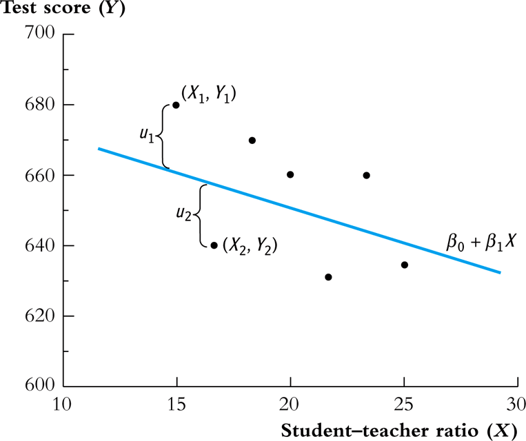
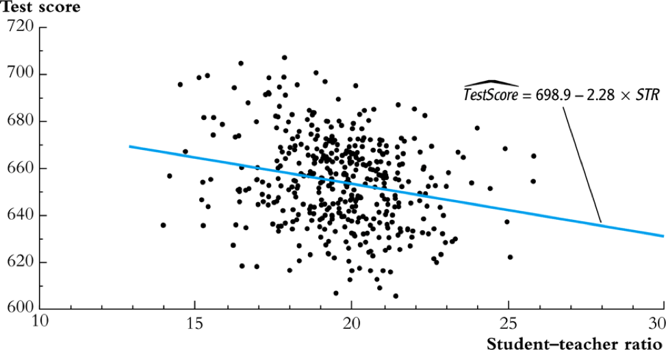
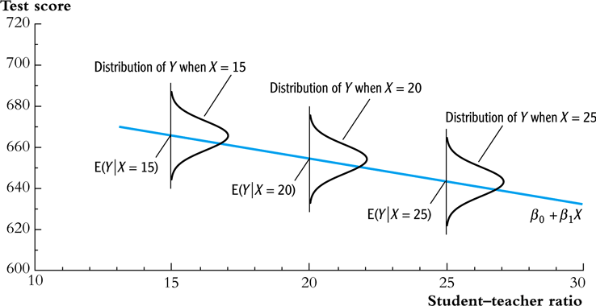
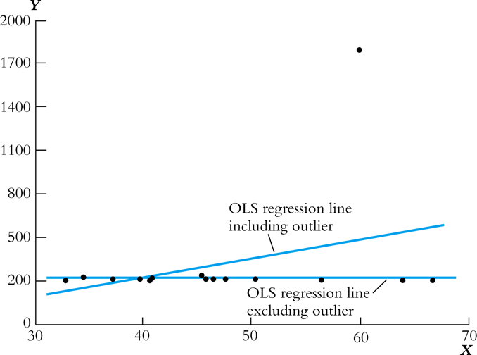

Lecture 6: Linear Regression with One Regressor
Zheng Tian
Created: 2017-03-22 Wed 20:06
The Linear Regression Model
What is regression?
Definition of regress in Merriam-Webster's dictionary
Merriam-Webster gives the following definition of the word "regress":
- An act or the privilege of going or coming back
- Movement backward to a previous and especially worse or more primitive state or condition
- The act of reasoning backward
The meaning of regression in statistics?
- In statistics, regression analysis focus on the conditional mean of the dependent variable given the independent variables, which is a function of the values of independent variables.
A very simple functional form of a conditional expectation is a linear function. That is, we can model the conditional mean as follows,
\begin{equation} \label{eq:genpopreg} \mathrm{E}(Y \mid X = x) = f(x) = \beta_{0} + \beta_1 x \end{equation}The above equation is a simple linear regression function.
Research question:
Let's introduce a regression analysis with the application of test scores versus class sizes in California school districts.
Can reducing class sizes increase students' test scores?
- How can we answer this question?
Randomized controlled experiment
- Randomly choose 42 students and divide them into two classes, with one having 20 students and another having 22.
- They are taught with the same subject and by the same teachers.
- Randomization ensures that it is the difference in class sizes of the two classes that is the only factor affecting test scores.
Compute conditional means
Compute the expected values of test scores, given the different class sizes.
\begin{gather*} \mathrm{E}(TestScore | ClassSize = 20) \\ \mathrm{E}(TestScore | ClassSize = 22) \end{gather*}The effect of class size on test scores is
\begin{equation*} \mathrm{E}(TestScore | ClassSize = 20) - \mathrm{E}(TestScore | ClassSize = 22) \end{equation*}
The population regression function for test scores on class sizes
- We use a linear regression function to describe the relationship between test scores and class sizes.
The population regression function or the population regression line
\begin{equation} \label{eq:popreg-testscore} \mathrm{E}(TestScore | ClassSzie) = \beta_0 + \beta_1 ClassSize \end{equation}
The simple linear regression model for test scores on class sizes
We can lump all these factors into a single term, and set up a simple linear regression model as follows,
\begin{equation} \label{eq:regmodel-testscore} TestScore = \beta_0 + \beta_1 ClassSize + OtherFactors \end{equation}- If we assume \(\mathrm{E}(OtherFactors | ClassSize) = 0\), then the simple linear regression model becomes the population regression line.
A distinction between the population regression function and the population regression model
- A population regression function
- It's a deterministic relation between class size and the expectation of test scores.
- However, we cannot compute the exact value of the test score of a particular observation.
- A population regression model
- It's a complete description of a data generating process (DGP).
- The association between test scores and class size is not deterministic, depending on the value of other factors.
An interpretation of the population regression model
Now we have set up the simple linear regression model,
\begin{equation*} TestScore = \beta_0 + \beta_1 ClassSize + OtherFactors \end{equation*}What is \(\beta_1\) and \(\beta_0\) represent in the model?
Interpret \(\beta_1\)
- Denote \(\Delta TestScore\) and \(\Delta ClassSize\) to be their respective change.
- Holding other factors constant, we have \[ \Delta TestScore = \beta_1 \Delta ClassSize \] where \(\beta_0\) is removed because it is a constant.
Then, we get
\[ \beta_1 = \frac{\Delta TestScore}{\Delta ClassSize} \]
That is, \(\beta_1\) measures the change in the test score resulting from a one-unit change in the class size.
Marginal effect
When \(TestScore\) and \(ClassSize\) are two continuous variable, we can write \(\beta_1\) as
\[\beta_1 = \frac{\mathrm{d} TestScore}{\mathrm{d} ClassSize} \]
- We often call \(\beta_1\) as the marginal effect of the class size on the test score.
Holding other things constant
- The phrase of "holding other factors constant" is important. Without it, we cannot disentangle the effect of class sizes on test scores from other factors.
- "Holding other things constant" is often expressed as the notion of ceteris paribus.
Interpret \(\beta_0\)
- \(\beta_0\) is the intercept in the model.
- Sometimes it bears real meanings, but sometimes it merely represents an intercept.
- In regression model of test scores on class sizes, \(\beta_0\) is the test score when the class size and other factors are all zero, which is obviously nonsensical.
The general linear regression model
- Consider two random variables \(Y\) and \(X\). For both, there are \(n\) observations so that each observation \(i = 1, 2, 3, \ldots\) is associated with a pair of values of \((X_i, Y_i)\).
Then a simple linear regression model that associates \(Y\) with \(X\) is
\begin{equation} \label{eq:single-regress} Y_i = \beta_0 + \beta_1 X_i + u_i, \text{ for } i = 1, \ldots, n \end{equation}- \(Y_i\) is called the dependent variable, the regressand, or the LHS (left-hand side) variable.
- \(X_i\) is called the independent variable, the regressor, or the RHS (right-hand side) variable.
The general linear regression model (cont'd)
- \(\beta_{0}\) is the intercept, or the constant term. It can either have economic meaning or have merely mathematical sense, which determines the level of the regression line, i.e., the point of intersection with the Y axis.
- \(\beta_{1}\) is the slope of the population regression line. Since \(\beta_1 = \mathrm{d}Y_i/ \mathrm{d}X_i\), it is the marginal effect of \(X\) on \(Y\). That is, holding other things constant, one unit change in \(X\) will make \(Y\) change by \(\beta_1\) units.
- \(u_i\) is the error term. \(u_i = Y_i - (\beta_0 + \beta_1 X_i)\) incorporates all the other factors besides \(X\) that determine the value of \(Y\).
- \(\beta_{0} + \beta_{1}X_{i}\) represents the population regression function(or the population regression line).
An graphical illustration of a linear regression model
- The relationship between the data points, the population regression line, and the errors (other factors) are illustrated in Figure 1.

Figure 1: The Population Regression Line
The OLS Estimation Method for a Linear Regression Model
The intuition for the OLS and minimization
- We use the ordinary least squares (OLS) estimation method to estimate the simple linear regression model. \[Y_i = \beta_0 + \beta_1 X_i + u_i, \text{ for } i = 1, \ldots, n\]
Ordinary
- It means that the OLS estimator is a very basic method, from which we may derive some variations of the OLS estimator.
- Other least squares estimators: the weighted least squares (WLS), and the generalized least squares (GLS).
Least
- It means that the OLS estimator tries to minimize something. The "something" is the mistakes we make when we try to guess (estimate) the values of the parameters in the model.
- If our guess for \(\beta_0\) and \(\beta_1\) is \(b_0\) and \(b_1\), then the mistake of our guess is \[\hat{u}_{i} = Y_{i} - b_0 - b_1 X_i\]
Squares
- It represent the actual thing (a quantity) that we minimize. The OLS does not attempt to minimize each \(\hat{u}_{i}\).
- We minimize the sum of the squared mistakes, \[\sum_{i=1}^n \hat{u}_i^2\] Taking square is to avoid possible offsetting between positive and negative values of \(\hat{u}_i\) in \(\sum_i \hat{u}_i\).
The OLS estimators for \(\beta_0\) and \(\beta_1\)
- Let \(b_0\) and \(b_1\) be some estimators of \(\beta_0\) and \(\beta_1\), respectively.
The OLS estimators are the solution to the following minimization problem:
\begin{equation} \operatorname*{min}_{b_0, b_1}\: S(b_0, b_1) = \sum_{i=1}^n \hat{u}_i^2 = \sum_{i=1}^n (Y_i - b_0 - b_1 X_i)^2 \label{eq:min-ols} \end{equation}where \(S(b_0, b_1)\) is a function of \(b_0\) and \(b_1\)
The mathematical derivation of the OLS estimators for \(\beta_0\) and \(\beta_1\)
The first order conditions
Evaluated at the optimal solution \((\hat{\beta}_0, \hat{\beta}_1)\), the FOCs are
\begin{align} & \frac{\partial S}{\partial b_0}(\hat{\beta}_0, \hat{\beta}_1) = \sum_{i=1}^n (-2)(Y_i - \hat{\beta}_0 - \hat{\beta}_1 X_i) = 0 \label{eq:b-0} \\ & \frac{\partial S}{\partial b_1}(\hat{\beta}_0, \hat{\beta}_1) = \sum_{i=1}^n (-2)(Y_i - \hat{\beta}_0 - \hat{\beta}_1 X_i) X_i = 0 \label{eq:b-1} \end{align}
Get the OLS estimator \(\hat{\beta}_0\)
From the first condition, we have
\begin{gather} \sum_{i=1}^n Y_i - n \hat{\beta}_0 - \hat{\beta}_1 \sum_{i=1}^n X_i = 0 \notag \\ \hat{\beta}_0 = \frac{1}{n} \sum_{i=1}^n Y_i - \frac{\hat{\beta}_1}{n}\sum_{i=1}^n X_i = \overline{Y} - \hat{\beta}_1 \overline{X} \label{eq:bhat-0} \end{gather}
Get the OLS estimator \(\hat{\beta}_1\)
From the second condition, we have
\begin{gather} \sum_{i=1}^n X_i Y_i - \hat{\beta}_0 \sum_{i=1}^n X_i - \hat{\beta}_1 \sum_{i=1}^n X^2_i = 0 \notag \\ \sum_{i=1}^n X_i Y_i - \frac{1}{n}\sum_{i=1}^n X_i \sum_{i=1}^n Y_i + \hat{\beta}_1 \frac{1}{n} \left(\sum_{i=1}^n X_i\right)^2 - \hat{\beta}_1 \sum_{i=1}^n X_i^2 = 0 \notag \\ \hat{\beta}_1 = \frac{n\sum_{i=1}^n X_i Y_i - \sum_{i=1}^n X_i \sum_{i=1}^n Y_i}{n\sum_{i=1}^n X_i^2 - (\sum_{i=1}^n X_i)^2} \label{eq:bhat-1} \end{gather}
A trick of collecting terms
- Similarly, we can show that \(\sum_i (X_i - \overline{X})^2 = \frac{1}{n} \left[n\sum_i X_i^2 - (\sum_i X_i)^2\right]\).
Concise expressions of \(\hat{\beta}_1\)
Collecting terms in the expression in \(\hat{\beta}_1\), we have
\begin{equation*} \hat{\beta}_1 = \frac{\sum_{i=1}^n (X_i - \overline{X})(Y_i - \overline{Y})}{\sum_{i=1}^n (X_i - \overline{X})^2} \end{equation*}- The sample covariance of \(X\) and \(Y\) is \(s_{XY} = \frac{1}{n-1} \sum_{i=1}^n (X_i - \overline{X})(Y_i - \overline{Y})\)
- The sample variance of \(X\) is \(s_X^2 = \frac{1}{n-1} \sum_{i=1}^n (X_i - \overline{X})^2\)
- \(\hat{\beta}_1\) can also be written as \[ \hat{\beta}_1 = \frac{s_{XY}}{s^2_X} \]
Summary of the OLS estimators
In sum, the OLS estimators for \(\beta_0\) and \(\beta_1\) as
\begin{align} \hat{\beta}_1 & = \frac{\sum_{i=1}^n (X_i - \overline{X})(Y_i - \overline{Y})}{\sum_{i=1}^n (X_i - \overline{X})^2} = \frac{s_{XY}}{s^2_X} \label{eq:betahat-1} \\ \hat{\beta}_0 & = \overline{Y} - \hat{\beta}_1 \overline{X} \label{eq:betahat-0} \end{align}
The predicted values, residuals, and the sample regression line
\[\hat{Y}_i = \hat{\beta}_0 + \hat{\beta}_1 X_i\]
- The predicted values: \(\hat{Y}_i\) for \(i=1,\ldots,n\)
- The residuals: \(\hat{u}_i = Y_i - \hat{Y}_i\) for \(i=1,\ldots,n\)
- The sample regression line: \(\hat{\beta}_0 + \hat{\beta}_1 X_i\)
- The sample average point \((\overline{X}, \overline{Y})\) is always on the sample regression line because \[ \overline{Y} = \hat{\beta}_0 + \hat{\beta}_1 \overline{X} \]
A comparison between the population regression model and the sample counterparts
| Population | Sample | |
|---|---|---|
| Regression functions | \(\beta_{0} + \beta_{1}X_{i}\) | \(\hat{\beta}_0 + \hat{\beta}_1 X_i\) |
| Parameters | \(\beta_{0}\), \(\beta_{1}\) | \(\hat{\beta}_{0}\), \(\hat{\beta}_{1}\) |
| Errors vs residuals | \(u_{i}\) | \(\hat{u}_{i}\) |
| The regression model | \(Y_i = \beta_0 + \beta_1 X_i + u_i\) | \(Y_i = \hat{\beta}_0 + \hat{\beta}_1 X_i + \hat{u}_{i}\) |
The OLS estimates of the relationship between test scores and the student-teacher ratio
\[TestScore = \beta_0 + \beta_1 ClassSize + OtherFactors\]
- Let's first do some simple exploratory analysis before a regression analysis.
Basic summary statistics
Some commonly used summary statistics are computed, including the mean, standard deviation, median, minimum, maximum, and quantiles (percentiles), etc.
Table 1: Summary Of distributions of student-teacher ratios and test scores Average S.t.d. 25% 50% 75% TestScore 654.16 19.05 640.05 654.45 666.66 STR 19.64 1.89 18.58 19.72 20.87
Scatterplot

- The correlation coefficient between the two variables is -0.23.
Regression analysis
\[\widehat{TestScore} = 698.93 - 2.28 \times STR\]

Interpretation of the estimated coefficients
- What does the slope tell us?
- How large is the effect actually?
- What does the intercept mean?
The Algebraic Properties of the OLS Estimator
The algebraic properties of the ols estimator
- Let's first look at some of the algebraic properties of the OLS estimators.
- These properties hold regardless of any statistical assumptions.
TSS, ESS, and SSR
- From \(Y_i = \hat{Y}_i + \hat{u}_i\), we can define
- The total sum of squares: \(TSS = \sum_{i=1}^n (Y_i - \overline{Y})^2\)
- The explained sum of squares: \(ESS = \sum_{i=1}^n (\hat{Y}_i - \overline{Y})^2\)
- The sum of squared residuals: \(SSR = \sum_{i=1}^n (Y_i - \hat{Y}_i)^2 = \sum_{i=1}^n \hat{u}_i^2\)
- The "deviation from the mean" form is only valid when an intercept is included in the regression model.
Some algebraic properties among \(\hat{u}_i\), \(\hat{Y}_i\), and \(Y_i\)
Proof of \(\sum_{i=1}^n \hat{u}_i = 0\)
\[\hat{u}_i = Y_i - \hat{\beta}_0 - \hat{\beta}_1 X_i = (Y_i - \overline{Y}) - \hat{\beta}_1 (X_i - \overline{X})\]
\[\sum_{i=1}^n \hat{u}_i = \sum_{i=1}^n (Y_i - \overline{Y}) - \hat{\beta}_1 \sum_{i=1}^n (X_i - \overline{X}) = 0\]
Proof of \(\frac{1}{n} \sum_{i=1}^n \hat{Y}_i = \overline{Y}\)
Note that \(Y_i = \hat{Y}_i + \hat{u}_i\). So \[\sum_{i=1}^n Y_i = \sum_{i=1}^n \hat{Y}_i + \sum_{i=1}^n \hat{u}_i = \sum_{i=1}^n \hat{Y}_i\] It follows that \(\overline{\hat{Y}} = (1/n)\sum_{i=1}^n \hat{Y}_i = \overline{Y}\).
Proof of \(\sum_{i=1}^n \hat{u}_i X_i = 0\)
Proof of \(TSS = ESS + SSR\)
Measures of Fit
Goodness of Fit: R2
- \(R^2\) is often called the coefficient of determination.
- It indicates the proportion of the variance in the dependent variable that is predictable from the independent variable(s).
Properties of R2
\(R^2 \in [0, 1]\)
\(R^2 = 0\) when \(\hat{\beta}_1 = 0\).
\begin{equation*} \hat{\beta}_1 = 0 \Rightarrow Y_i = \hat{\beta}_0 + \hat{u}_i \Rightarrow \hat{Y}_i = \overline{Y} = \hat{\beta}_0 \Rightarrow ESS = \sum_i^n (\hat{Y}_i - \overline{Y})^2 = 0 \Rightarrow R^2 = 0 \end{equation*}- \(R^2 = 1\) when \(\hat{u}_i = 0\) for all \(i = 1, \ldots, n\). \[ \hat{u}_i = 0 \Rightarrow SSR = \sum_i^n \hat{u}_i^2 = 0 \Rightarrow R^2 = 1 \]
\(R^2 = r^2_{XY}\)
- \(r_{XY}\) is the sample correlation coefficient \[ r_{XY} = \frac{S_{XY}}{S_X S_Y} = \frac{\sum_i^n(X_i - \overline{X})(Y_i - \overline{Y})}{\left[\sum_i^n (X_i - \overline{X})^2 \sum_i^n (Y_i - \overline{Y})^2 \right]^{1/2}} \]
\(R^2 = r^2_{XY}\) (cont'd)
\(R^2 = r^2_{XY}\) (cont'd)
- It follows that \[ R^2 = \frac{SSR}{TSS} = \frac{\left[ \sum_{i=1}^n (X_i - \overline{X})(Y_i - \overline{Y}) \right]^2}{\sum_{i=1}^n (X_i - \overline{X})^2 \sum_{i=1}^n (Y_i - \overline{Y})^2} = r^2_{XY} \]
- Note: This property holds only for the linear regression model with one regressor and an intercept.
The use of \(R^2\)
- \(R^2\) is usually the first statistics that we look at for judging how well the regression model fits the data.
- However, we cannot merely rely on \(R^2\) for judge whether the regression model is "good" or "bad".
The standard error of regression (SER) as a measure of fit
- SER has the same unit of \(u_i\), which are the unit of \(Y_i\).
- SER measures the average “size” of the OLS residual.
- The root mean squared error (RMSE) is closely related to the SER: \[ \mathrm{RMSE} = \sqrt{\frac{1}{n}\sum^n_{i=2} \hat{u}_i^2} \] As \(n \rightarrow \infty\), \(SER = RMSE\).
\(R^2\) and SER for the application of test scores v.s. class sizes
- In the application of test scores v.s. class sizes, \(R^2\) is 0.051 or 5.1%, which implies that the regressor STR explains only 5.1% of the variance of the dependent variable TestScore.
- SER is 18.6, which means that standard deviation of the regression residuals is 18.6 points on the test.
The Least Squares Assumptions
Assumption 1: The conditional mean of \(u_i\) given \(X_i\) is zero
- If the equation above is satisfied, then \(X_i\) is called exogenous.
- This assumption can be stated a little stronger as \(E(u|X=x) = 0\) for any value \(x\), that is \(E(u_i | X_1, \ldots, X_n) = 0\).
- It follows that \(E(u)=E(E(u|X))=E(0)=0\).
An illustration of Assumption 1

Figure 4: An illustration of \(E(u|X=x)=0\)
Correlation and conditional mean
\[ E(u_i | X_i) = 0 \Rightarrow \mathrm{Cov}(u_i, X_i) = 0 \]
A simple proof:
\begin{equation*} \begin{split} \mathrm{Cov}(u_i, X_i) &= E(u_i X_i) - E(u_i) E(X_i) \\ &= E(X_i E(u_i|X_i)) - 0 \cdot E(X_i) \\ &= 0 \end{split} \end{equation*}where the law of iterated expectation is used twice at the second equality.
It follows that \[\mathrm{Cov}(u_i, X_i) \neq 0 \Rightarrow E(u_i|X_i) \neq 0\]
Assumption 2: \((X_i, Y_i)\) for \(i = 1, \ldots, n\) are i.i.d.
- Each pair of \(X\) and \(Y\), i.e., \((X_i, Y_i)\) for \(i=1, \ldots, n\), is selected randomly from the same joint distribution of \(X\) and \(Y\).
- Since \(u_i = Y_i - \beta_0 - \beta_1 X_i\), \(u_{i}\) is i.i.d., too.
- The cases that may violate of the i.i.d. assumption:
- Time series data, \(\mathrm{Cov}(Y_t, Y_{t-1}) \neq 0\).
- Serial correlation problem.
- Spatial data, \(\mathrm{Cov}(Y_r, Y_s) \neq 0\), where \(s\) and \(r\)
refer to two neighboring regions.
- Spatial correlation problem.
- Time series data, \(\mathrm{Cov}(Y_t, Y_{t-1}) \neq 0\).
Assumption 3: large outliers are unlikely
\[0 < E(X^4_i) < \infty \text{ and } 0 < E(Y_i^4) < \infty\]
- A large outlier is an extreme value of \(X\) or \(Y\).
- On a technical level, if \(X\) and \(Y\) are bounded, then they have finite fourth moments, i.e., finite kurtosis.
- The essence of this assumption is to say that a large outlier can strongly influence the results. So we need to rule out large outliers in estimation.
The influential observations and the leverage effects

Figure 5: How an outlier can influence the OLS estimates
Sampling Distribution of the OLS Estimators
Unbiasedness and consistency
The randomness of \(\hat{\beta}_0\) and \(\hat{\beta}_1\)
Since \((X_i, Y_i)\) for \(i = 1, \ldots, n\) are randomly drawn from a population, different draws can render different estimates, giving rise to the randomness of \(\hat{\beta}_0\) and \(\hat{\beta}_1\).
The unbiasedness of \(\hat{\beta}_0\) and \(\hat{\beta}_1\)
- Let the true values of the intercept and the slope be \(\beta_0\) and \(\beta_1\). Based on the least squares assumption #1: \(E(u_i|X_i) = 0\) \[ E(\hat{\beta}_0) = \beta_0 \text{ and } E(\hat{\beta}_1) = \beta_1 \]
Show that \(\hat{\beta}_1\) is unbiased
\[\hat{\beta}_1 = \frac{\sum_{i=1}^n (X_i - \overline{X})(Y_i - \overline{Y})}{\sum_{i=1}^n (X_i - \overline{X})^2}\]
- Given the random samples \((X_i, Y_i)\) for \(i=1, \ldots, n\), from \[Y_i = \beta_0 + \beta_1 X_i + u_i\] We know that \[\overline{Y} = \beta_0 + \beta_1 \overline{X} + \bar{u}\] It follows that \[Y_i - \overline{Y} = \beta_1 (X_i - \overline{X}) + u_i - \overline{u}\]
Show that \(\hat{\beta}_1\) is unbiased (cont'd)
The numerator in \(\hat{\beta}_1\) is
\begin{equation*} \begin{split} \sum_i (X_i - \overline{X})(Y_i - \overline{Y}) &= \sum_i (X_i - \overline{X})\left[\beta_1(X_i - \overline{X}) + (u_i - \overline{u}) \right] \\ &= \beta_1 \sum_i(X_i - \overline{X})^2 + \sum_i (X_i - \overline{X})u_i - \overline{u}\sum_i (X_i - \overline{X}) \\ &= \beta_1 \sum_i(X_i - \overline{X})^2 + \sum_i (X_i - \overline{X})u_i \end{split} \end{equation*}- In the second equality, we use the fact that \(\sum_i (X_i - \overline{X}) = 0\).
- Note that although we know from the first OLS assumption, \(E(u_i) = 0\), we cannot guarantee that \(\bar{u} = 0\) since \(u_1, \ldots, u_n\) are simply random draws of \(u_i\).
Show that \(\hat{\beta}_1\) is unbiased (cont'd)
Then
\begin{equation*} \begin{split} E(\hat{\beta}_1 | X_1, \ldots, X_n) &= \beta_1 + E\left\lbrace \left[\frac{\frac{1}{n}\sum_i (X_i - \overline{X})u_i}{\frac{1}{n}\sum_i (X_i - \overline{X})^2} \right] \mid X_1, \ldots, X_n \right\rbrace \\ &= \beta_1 + \frac{\frac{1}{n}\sum_i (X_i - \overline{X})E(u_i|X_1, \ldots, X_n)}{\frac{1}{n}\sum_i (X_i - \overline{X})^2} \\ &= \beta_1\: \text{ (by assumption 1)} \end{split} \end{equation*}
Show that \(\hat{\beta}_1\) is unbiased (cont'd)
- It follows that \[E(\hat{\beta}_1) = E(E(\hat{\beta}_1 | X_1, \ldots, X_n)) = \beta_1\]
- Therefore, \(\hat{\beta}_1\) is an unbiased estimator of \(\beta_1\).
- The proof of unbiasedness of \(\hat{\beta}_0\) is left for exercise.
The consistency of \(\hat{\beta}_0\) and \(\hat{\beta}_1\)
- \(\hat{\beta}\) is said to be a consistent estimator of \(\beta\) if as \(n\) goes to infinity, \(\hat{\beta}\) is in probability close to \(\beta\), which can be denoted as \(n \rightarrow \infty, \hat{\beta} \xrightarrow{ \text{ p } } \beta\).
- Recall the law of large number states that for random i.i.d. samples \(x_1, \ldots, x_n\), if \(E(x_i) = \mu\) and \(\mathrm{Var}(x_i) < \infty\), then \(\bar{x} \xrightarrow{\text{ p }} \mu\) as \(n \rightarrow \infty\).
- Then we can show that \(n \rightarrow \infty\), \(\hat{\beta} \xrightarrow{ \text{ p } } \beta\), i.e., \(\hat{\beta}_1\) is a consistent estimator of \(\beta_1\).
The asymptotic normal distribution of \(\hat{\beta}_1\)
- Recall the central limit theory states that if \(X_1, \ldots, X_n\) with the mean \(\mu\) and the variance \(0 < \sigma^2 < \infty\). Then, \[\frac{1}{n}\sum_i X_i \xrightarrow{\text{d}} N(\mu, \frac{\sigma^2}{n})\]
We can prove that \(\hat{\beta}_1\) is asymptotically normally distributed as \[ \hat{\beta}_1 \xrightarrow{ \text{d}} N\left( \beta_1, \sigma^2_{\hat{\beta}_1}\right) \] where
\begin{equation*} \sigma^2_{\hat{\beta}_1} = \frac{1}{n}\frac{\mathrm{Var}\left((X_i - \overline{X})u_i\right)}{\mathrm{Var}(X_i)^2} \end{equation*}- As \(\mathrm{Var}(X_i)\) increases, \(\mathrm{Var}(\hat{\beta}_1)\) decreases.
- As \(\mathrm{Var}(u_i)\) increases, \(\mathrm{Var}(\hat{\beta}_1)\) increases.
The asymptotic normal distribution of \(\hat{\beta}_0\)
Similarly, we can show that \[\hat{\beta}_0 \xrightarrow{\text{d}} N(\beta_0, \sigma^2_{\hat{\beta}_0})\] where
\begin{equation*} \sigma^2_{\hat{\beta}_0} = \frac{1}{n}\frac{\mathrm{Var}(H_i u_i)}{\left( E(H^2_i) \right)^2}, \text{ and } H_i = 1 - \left( \frac{\mu_X}{E(X_i^2)} \right)X_i \end{equation*}